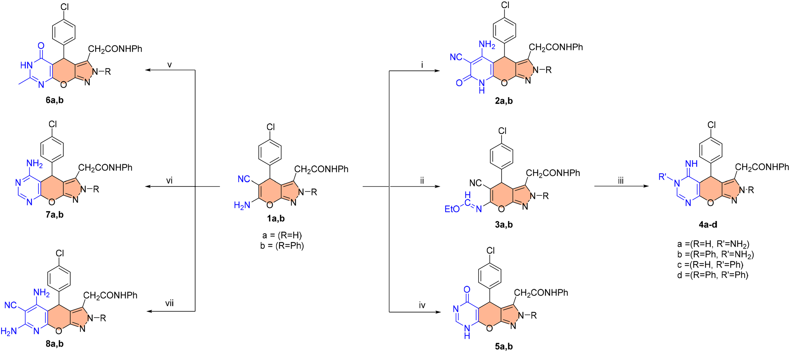

About
I am an instructor in the Chemistry Department, Faculty of Science, Fayoum University, Egypt. My research combines organic synthesis with materials chemistry: heterocyclic compounds and molecular docking, benzoxazine-based polymers for supercapacitors, and MOF-based composites for tumor therapy.
Selected figures from my research

Figures from: Abdelatty, M. M. et al. Rational design and antibacterial assessment of novel pyranopyrazole derivatives. Scientific Reports 16, 11621 (2026). Open access, CC BY 4.0.
Citation metrics
| Database | Citations | h-index | i10-index | Update | Figures as of |
|---|---|---|---|---|---|
| Google Scholar | 17 | 3 | 1 | manual re-check | 2026-11-26 |
| Scopus | 14 | 2 | - | manual re-check | 2026-11-26 |
| OpenAlex | 21 | 3 | - | automatic (weekly) | 2026-11-26 |
Each row keeps its own date: it changes only when that database's figures were last successfully checked. OpenAlex refreshes weekly once the included GitHub Actions workflow is deployed; Google Scholar has no public API and Scopus needs an Elsevier API key, so those rows are re-checked manually. Databases index different sources, so counts differ.
Profiles: Google Scholar · Scopus (58703124300) · ORCID (0000-0002-8136-8397) · Web of Science (JBI-7603-2023) · LinkedIn
Education and positions
- Instructor, Chemistry Department
Faculty of Science, Fayoum University - MSc Organic Chemistry
Fayoum University - BSc Chemistry
Fayoum University
Publications
Rational Design and Antibacterial Assessment of Novel Pyranopyrazole Derivatives: a Combined Experimental and In Silico Study
M. M. Abdelatty, A. A. Makhlouf, M. E. Moustapha, A. M. Yossef, Z. R. Farag. Scientific Reports, 16, 11621 (2026). (open access)
Tailoring of Amorphous Vanillin-Based Benzoxazine Polymer as a High-Performance Electrode for Symmetrical Supercapacitor
Z. R. Farag, M. E. Moustapha, M. M. Abdelatty, H. S. H. Mohamed. Journal of Energy Storage, 140 (2025) 119030. Cited by 3 (Google Scholar, 2026-11-26).
Synthesis, Antimicrobial Studies, and Molecular Docking Simulation of Novel Pyran, Pyrazole, and Pyranopyrazole Derivatives
M. M. Abdelatty, Z. R. Farag, A. El Hassane, M. E. Moustapha, A. A. Makhlouf, A. M. Yossef. Journal of Chemistry, vol. 2023, Article ID 6623445. (open access) Cited by 10 (Google Scholar, 2026-11-26).
Synthesis, Characterization, In vitro Antibacterial, and Molecular Modeling Study of Some Pyrazole and Pyranopyrazole Derivatives
M. M. Abdelatty, Z. R. Farag, A. M. Yossef, A. A. Makhlouf. Fayoum Journal of Agricultural Research and Development, 37 (3), 478-493 (2023). (open access) Cited by 4 (Google Scholar, 2026-11-26).
Conference presentations
- Symposium on Medicinal Chemistry, Chinese Pharmaceutical Association, Xinjiang Medical University, Xinjiang, China. Poster: Synthesis and medicinal chemobiological evaluation of novel pyrazoles as potential antimicrobial agents.
- The 19th National Synthetic Organic Chemistry Symposium, Jiangsu Suzhou, China. Poster: Synthesis of novel pyranopyrazoles as potential antibacterial agents.
- ICBSEA 2018, Fayoum University, 3-5 Apr 2018. Poster: Formulating new nano fertilizers for enhanced seed germination, plant nutrition, and production in wheat under stress.